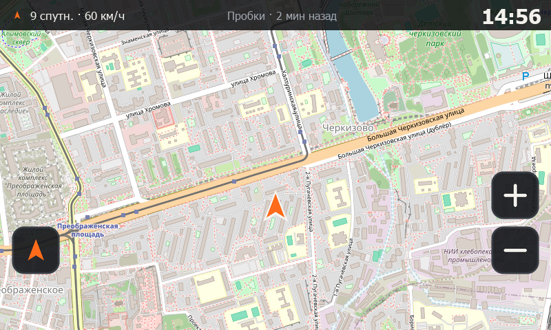
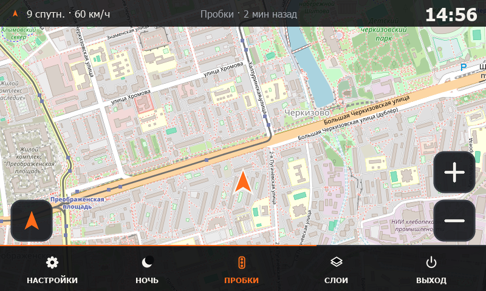
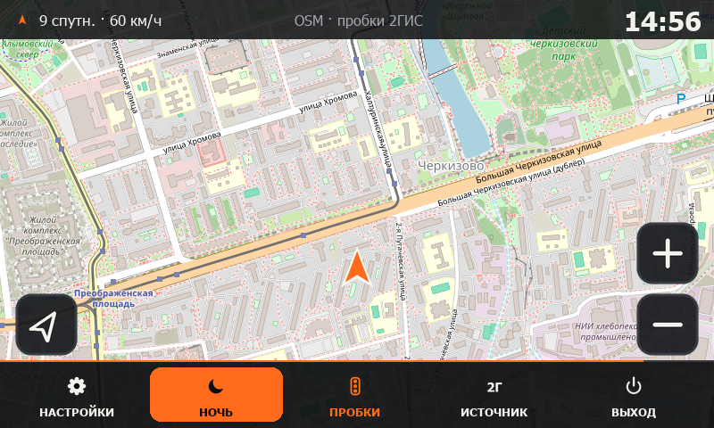
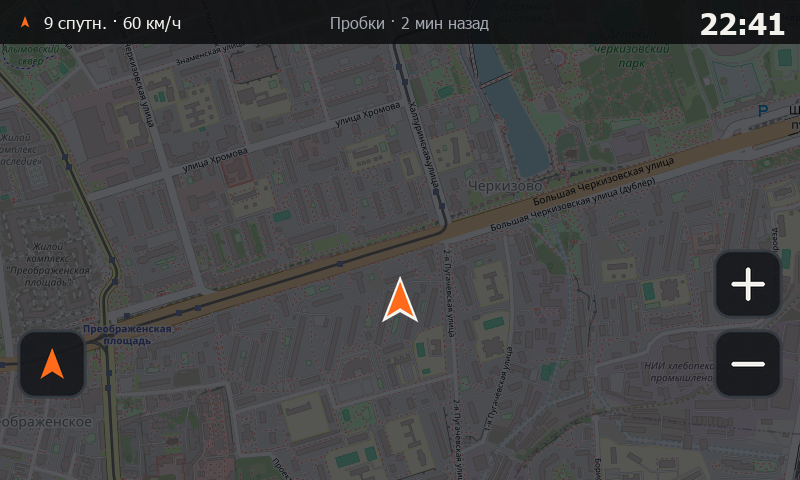
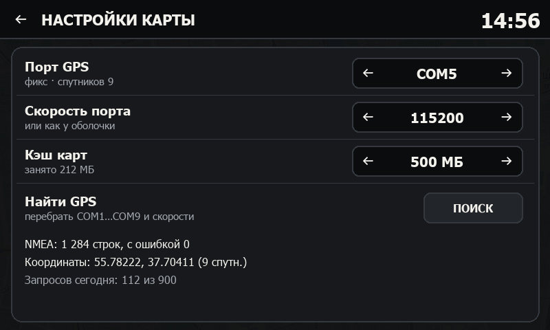
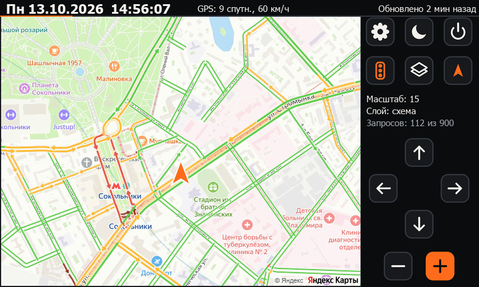
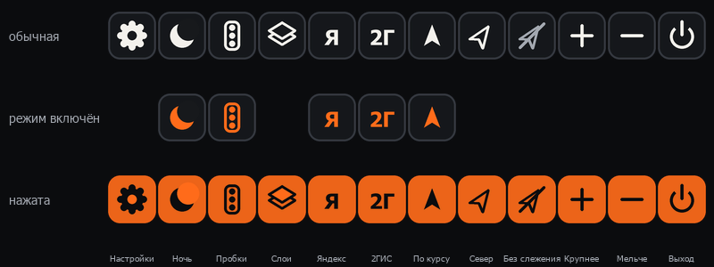

Макеты 800 × 480 (экран ГУ) на настоящих картах из кэша: OSM — OSMapsCE, Яндекс с пробками — YaMapsCE. Палитра VestaHome: графит #0B0C0E, панели #17191C, линии #34383F, текст #F3F1EC / #A3A8B0, один акцент — оранжевый #FF6B1A. Значки — линией, как в VestaHome.

Карта 800 × 480. Поверх — тёмная строка статуса 44 px (GPS, свежесть карты/пробок, крупные часы, как в верхнем баре VestaHome). Всегда на месте только то, что нужно на ходу: «+» / «−» 72 px справа и режим слежения GPS 72 px слева (оранжевый — «по курсу»). Стрелок сдвига нет: карту двигают пальцем.

Касание карты (без сдвига) поднимает панель того же вида, что нижний бар VestaHome: Настройки, Ночь, Пробки, Слои, Выход — значок + подпись. Включённый режим — оранжевым. Оранжевая полоска сверху укорачивается: через 6 с без касаний панель уезжает вниз. Повторное касание карты прячет её сразу.

В OSMapsCE вместо «Слои» — источник пробок (Яндекс / 2ГИС, кнопка показывает текущий). Нажатие — сплошная оранжевая заливка (здесь «Ночь»). Режим GPS «север» — белая стрелка.

Ночной фильтр карты как сейчас (затемнение), кнопки и строка те же — они и так тёмные.

Экран настроек в стиле «Настройки → Общие» VestaHome: строки со стрелками (порт COM1…COM9, скорость, размер кэша), поиск GPS, живое состояние приёмника. Применяется сразу, без кнопки «Применить»; «назад» — стрелка слева вверху.

Решение: у YaMapsCE остаются верхняя строка статуса, картинка 600 × 450 и правая панель на прежних местах (без мозаики и роста запросов). Новые — фон, кнопки 50 px, цвета текста, маркер машины (оранжевый) и экран настроек. Кадр собран из настоящих новых картинок YaMapsCE/Images.

Обычная — тёмная плитка с рамкой и светлым значком; режим включён — оранжевый значок; нажата — оранжевая заливка, тёмный значок. «Без слежения» — приглушённый перечёркнутый значок.